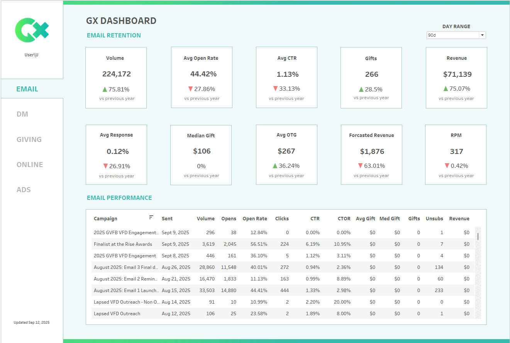

Generosity X

Generosity X works with a large clientelle of charities across Canada with fundraising marketing.
They needed a streamlined and bespoke way to track and visualize their fundraising efforts across all marketing channels for their clients.
To solve this I developed a scheduled ETL script in python to analyze their data and a dynamic Tableau Dashboard useable and branded for each of their clients.
Tech used: Python, Pandas, Github Actions, Tableau, Tableau Cloud, Google Sheets.